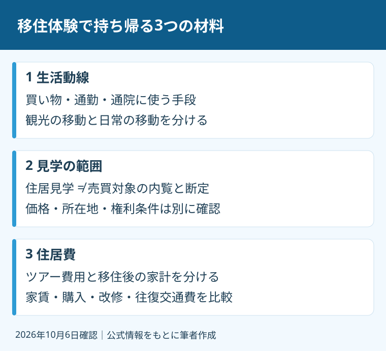

磐田市へ移住したい。週末だけ暮らす拠点を持ちたい。地域を見る前に家の購入まで決めるのは、私なら順番を分けます。まず暮らしを体験し、帰ってから不足している材料を確認する。そのためにツアーを使うのがよいと考えます。
私、大石浩之（磐田市／不動産業）は、宅地建物取引士として購入や売却の条件を整理する立場です。この記事は観光地の推薦ではなく、移住体験への参加を判断する材料です。磐田市公式ページを2026年10月6日に確認しました。
11月7～8日の体験、申込期限は10月18日
磐田市の「いわたの暮らし体験ツアー」は、2026年11月7～8日の開催予定です。市のページ更新日は2026年10月2日。申込受付期限は10月18日で、先着20名程度、最小催行人数は5名と案内しています。期限前に締め切る場合があります。
1日目には海老芋収穫体験、公園や公共施設などの市内見学、先輩移住者との交流があります。宿泊は竜洋海洋公園オートキャンプ場のコテージです。2日目には農産物の買い物、住居見学、振り返り会と個別移住相談が組まれています。
参加資格には確認が残ります。市ページの冒頭は東京圏在住者を対象とし、対象欄は静岡県外在住で磐田市への移住・二拠点生活に関心のある方としています。東京圏は東京都、神奈川県、埼玉県、千葉県です。東京圏以外の方は、市の移住相談窓口へ参加可否を確認してください。
市の問い合わせ先は電話0538-37-4805です。参加の決定後に、集合場所などの詳細がメールで案内されます。天候等で行程が変更・中止となる場合もあります。本記事では申込の残席や開催の最終確定までは確認できていません。
参加費無料でも、食費と交通の確認が要る
磐田市はツアーの参加費を無料と案内しています。ただし、初日の夕食BBQ代3,000円、2日目の朝食・昼食は自己負担です。「参加費無料」という一行だけで、家族の支出をゼロに見積もることはできません。
市の注意事項は、集合場所までの往復運賃に係るキャンセル料等を支払わないとしています。参加決定後の自己都合によるキャンセルでも、実費相当を負担する場合があります。交通の予約前に、負担条件と参加決定の連絡時期を確認します。
私は、参加のための予算を、案内されたBBQ代、別途の食事、集合場所までの交通、取消し時の支出に分けることを勧めます。案内に金額のない費用を、想像で補いません。家族で行く場合の料金の数え方や、宿泊条件も市へ聞く材料です。
意外に見落としやすいのは、地域を見られることと、将来の生活費が分かることの違いです。ツアーの支出が少なくても、移住後の家賃や移動費は別です。買う家の価格を判断する材料として、無料という言葉を使わない方針です。

確認1：日常の生活動線を質問する
移住体験で最初に確かめたいのは、候補の住まいから通勤、買い物、通院にどう移動するかです。生活動線とは、日常に繰り返し通る経路です。ツアーの車で回れた場所を、自分の暮らしでも同じ時間で回れるとは限りません。
これは私の提案ですが、見学中は施設の数より、使う時刻と交通手段を控えます。朝の出勤、夜の帰宅、雨の日の買い物を想定します。公園が気に入ったなら、家からどの道を通るかも質問します。平日や別の季節に確かめる項目は、次の訪問用に残します。
先輩移住者と話せる場では、「磐田は暮らしやすいですか」だけで終えません。車を使わない日の移動、通院の段取り、仕事との両立など、自分の条件に近い質問を用意します。他の人の経験を、そのまま自分の家族の答えにはしないためです。
地域の物件条件を見比べる補助資料には、磐田・袋井のエリア別の売れ方があります。売主向けの整理ですが、同じ市内でも物件の見られ方が違うと考える入口です。本記事だけで地区ごとの相場を予測しません。
確認2：住居見学で何を見られるか
磐田市の行程には、2日目の10時15分から住居見学が記載されています。ただし、公式本文では見学物件の所在地、価格、売買対象かどうかを確認できません。住居見学を、購入できる物件の内覧だと断定しないでください。
私なら、申込み前に「賃貸住宅か、売買物件か、暮らし方の事例か」「室内のどこを見られるか」を市へ質問します。見学で得たい情報が明確なら、当日聞けなかったことも整理できます。一般の建物見学と、特定の家の購入前調査は分けます。
仮に販売資料がある物件を検討するなら、販売図面の読み方を使って、価格、土地と建物の面積、築年、引渡し条件を照合します。図面にない修繕や権利の条件まで、写真だけで判断しません。
道路、名義、境界、設備の状態は購入前に個別の確認が要ります。住居見学に参加したことが、これらの調査の代わりにはなりません。私には、暮らしの体験で生まれた気持ちを大切にしつつ、購入の約束は急がせたくないという迷いがあります。
確認3：住居費を一か月の家計へ戻す
移住後の住居費は、賃貸なら家賃や関連費用、購入なら資金と維持費を分けて検討します。これは私が比較に使う整理です。ツアーでは分からない金額を空欄にし、見積りや販売資料を得た後で家計へ戻します。
購入価格が希望に収まっても、改修、駐車、設備の更新、維持管理を別に見ます。二拠点生活なら、今の住まいの支出が残り、磐田との往復交通費も加わります。片方の家賃やローンだけを比べると、毎月払う総額が見えません。
私なら、初期費用と毎月の費用を別の欄にします。例えば「購入時だけの支出」「住まなくても続く支出」「訪問回数で変わる支出」です。具体的な金額は候補物件と家族の計画で変わります。市全体の標準額として、裏取りのない数字は出しません。
災害情報も、購入を考える住所で確認します。実家売却とハザード情報の確認は、住所ごとに資料を見る考え方を整理しています。磐田市の一つの場所を体験して、市内全域の条件を同じだと判断しないでください。
良い点は人と暮らし、注文は確認範囲の明示
私は、磐田市のツアーで購入前に地域との接点を持てる点を評価します。地域の日常と自分の生活条件を照らし合わせて質問できるのが、私の考える良い点です。
磐田市の行程には先輩移住者との交流と、個別移住相談が記載されています。施設の見学だけでなく、参加者が話を聞く機会も組まれています。
海老芋収穫体験や農産物の買い物も、暮らしを想像する材料になります。資料だけでは質問しにくいことを、現地で確かめる入口です。物件を探す前に、家族の希望が合っているかを話す機会にもなると私は考えます。
その上で注文したいのは、住居見学で確かめられる範囲を事前に示すことです。販売物件の案内なのか、移住者の暮らしの見学なのかで準備は変わります。参加資格の二つの表現も、読者が自分で申込みを見送らないよう、問い合わせで明確にしてほしいと考えます。
今日の一歩は、参加条件と質問を一枚にする
磐田市の移住体験への参加を検討する今日の一歩は、参加資格と自己負担を市へ確認し、生活動線・住居見学・住居費の質問を一枚にすることです。10月18日の期限を前に、家の購入まで決める必要はありません。
私はこう考えます。家族で帰りの電車に乗る場面を想像すると、「楽しかった」だけで終えず、気に入ったことと未確認のことを別々にメモしてほしい。これは実際の参加経験ではなく、私の提案です。買い物の経路を見られたなら、次は通勤時刻を確かめる。住居を見られたなら、次は購入できる家の資料を取る。その一段ずつの確認が、家族の判断を支えると考えます。
私は、地域を体験した日に家を買う結論は要らない、と言い切ります。借りてみる案や、二拠点生活の回数を減らす案も含めて比べられます。富士ヶ丘サービスの地域密着の窓口でも、家族が困らない取引のため、資料の整理から案内します。契約・重要事項・税務・登記の個別判断は専門家に確認を。